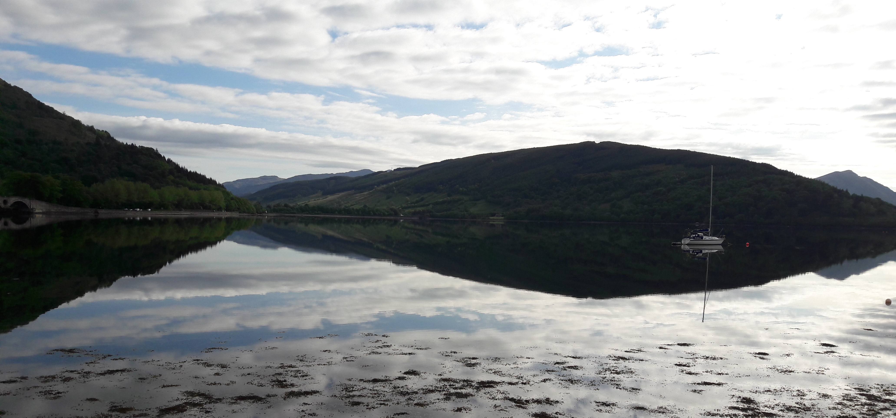
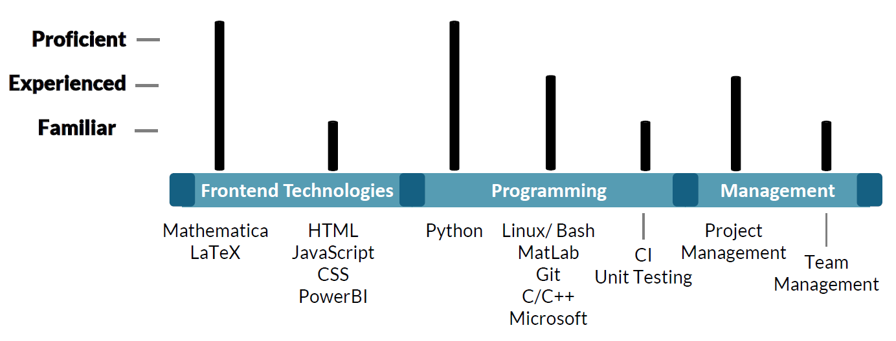
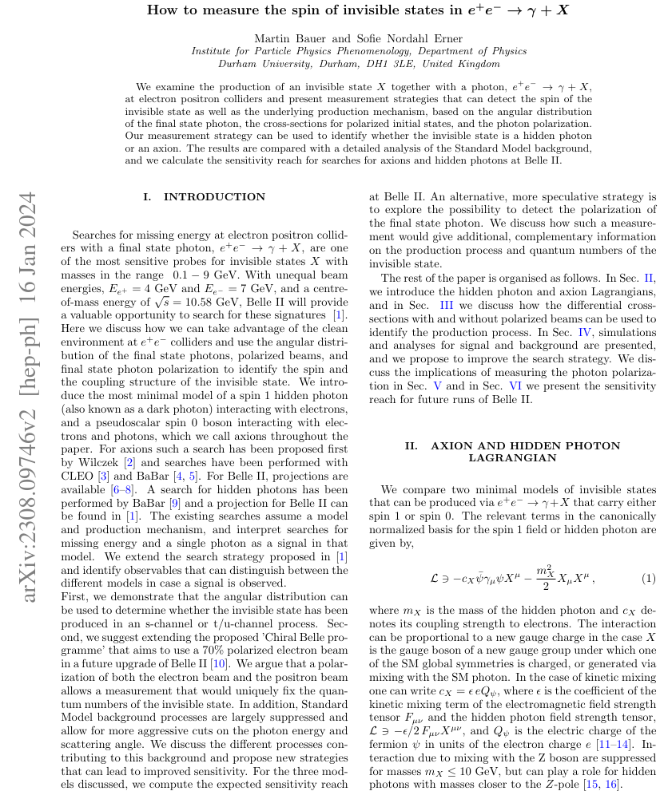
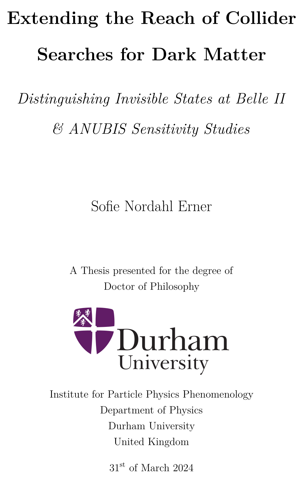
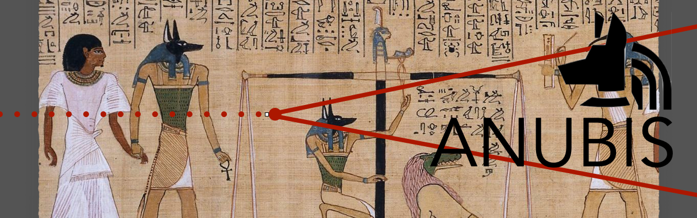

- Experienced Programmer
GitHub - Fluent English & Danish Speaker
- Mathematics & Physics
- Organisatinoal & Leadship Experience

Theoretical physics PhD graduate passionate about the environment.



Distinguishing Invisible States at Belle II

Code available at GitHub
Skills
Publications
How to Measure the Spin of Invisible States in e+ + e- ➙ γ + X
Study of Dark Photons and Axion-Like Particles at Belle II in mono-photon processes.
Phys. Rev. D 108, 115013
Extending the Reach of Collider Searches for Dark Matter
Distinguishing Invisible States at Belle II
& ANUBIS Sensitivity Studies
PhD Thesis (Link)
Collaborations
ANUBIS Collboration
Member of the ANUBIS collaboration (website) worked on the sensitivity study for the detector.